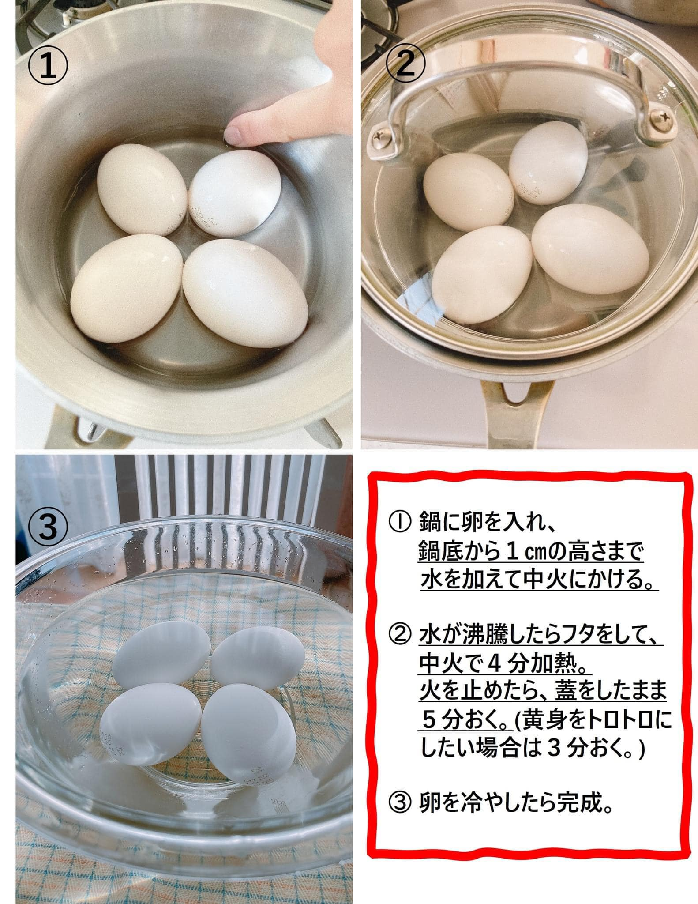
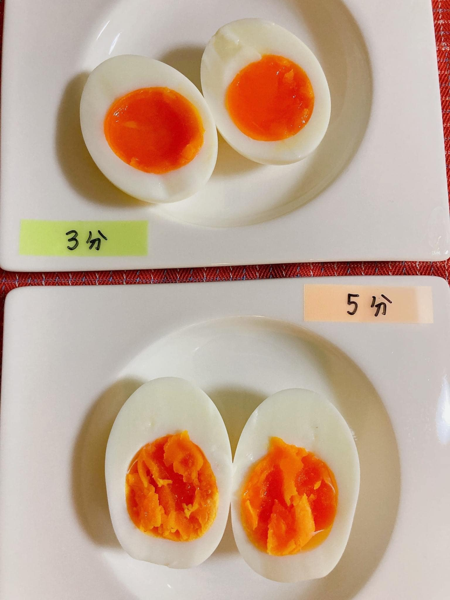

Luộc trứng theo Bộ nông nghiệp Nhật Bản
Luộc sao tiết kiệm điện nhất
Đây là cách luộc trứng kiểu Nhật được
tài khoản Twitter
chính thức của Bộ nông lâm thủy sản Nhật Bản giới thiệu 😼

- Cho trứng và đổ một lượng nước nhỏ, tầm 1cm ~ cỡ gần 1 đốt ngón tay.
- Đun nước, khi nào nước sôi thì đậy nắp lại để lửa vừa đun tiếp 4 phút.
- Tắt bếp, đợi tiếp 5 phút nếu muốn trứng chín và 3 phút nếu muốn lòng đào
- Bỏ vào nước lạnh rùi bóc vỏ và tận hưởng thành quả

Bon Appétit